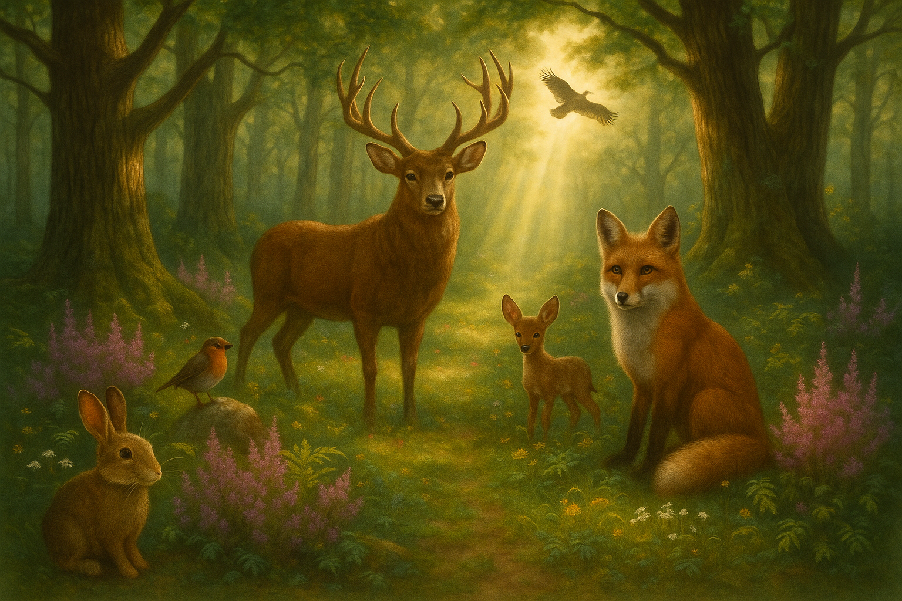

About Me
I'm Daniel Wade Heatherly, a passionate and detail-oriented Front-End Web Developer focused on building responsive, visually compelling, and accessible websites. I specialize in HTML and CSS, and am currently advancing my skills in JavaScript and modern frameworks. I enjoy solving design problems through clean code and engaging user experiences—especially with CSS, where I find creative flow in turning complexity into beauty.
My journey into web development began in an unexpected yet meaningful way. I've always been tech-savvy and curious about how things work, but I never imagined I'd find such passion and potential in coding—especially front-end development. That changed when I met Vincent Tang, a professional web developer, through our shared interests in breakdancing and fitness. We struck up a unique trade: I'd teach him breaking, and he'd teach me coding. At the time, I didn't even know what coding was, but I was open to learning.
Vincent invited me to local dev meetups and hackathons. At first, I came for the free food—but what I found was a vibrant, welcoming community and a fascinating world of front-end development that immediately clicked with me. Through Vincent, I met several other developer friends, and my network organically grew with relationships I still cherish, but what was ironic, and still amazes me, was the connection to web developers through dance we all shared. Later, while on a cruise, I was seated at dinner—coincidentally or perhaps divinely—with Steven, a web development company owner. After hearing about my goals, he generously offered me a future job opportunity and gave me helpful advice for my learning path.
After moving back to Oklahoma from Florida, I reconnected with a mentor named Angel, who I then discovered had been immersed in various areas of web development for years. He also offered to support and guide me in my growth. Strangely enough, even at my former job and while studying at a local food market, I happened to meet more developers—some who shared valuable advice, and one who even offered me a potential role. These moments felt too interconnected to be mere coincidence, reinforcing that this was the right path for me.
As I began learning HTML and CSS, I found myself drawn with enthusiasm to the very challenges many developers warned me about—especially CSS. While others described it as frustrating or tedious, I found joy in mastering its intricacies. Each hurdle I overcame became a source of genuine satisfaction. I discovered a deep creative fulfillment in bringing clean, aesthetic web interfaces to life and solving layout problems that others avoided. There's something deeply rewarding about transforming confusion into clarity and seeing tangible growth with every line of code.
I bring a diverse and dynamic background that fuels both discipline and creativity. I earned a Bachelor's degree in Ministry while mentoring youth and using breakdance (b-boying) as a powerful teaching tool. Alongside that, I played drums for my church and designed t-shirts—expressions of my lifelong passion for the arts. Whether dancing, drumming, or drawing, I've always been a detail-oriented creative. My love for comedy and storytelling has driven me to write sketches and skit ideas for years.
Professionally, I've worn many hats: supervising and scheduling lifeguard teams, performing and teaching breakdance, and co-owning a roofing company where I balanced leadership with hands-on labor. As a Medicare Case Manager, I thrived in a high-pressure environment, juggling multiple web platforms, handling sensitive information, and training new hires. I was recognized among the top four agents nationwide for conducting Health Risk Assessments, with my workflow held up as a company-wide model of efficiency.
After sustaining physical injuries that limited my ability to continue roofing and breakdancing professionally, I began searching for a more sustainable and creative career path—leading me to web development. It offered the perfect blend of problem-solving, artistry, and long-term flexibility. Beyond earning income and creating more free time, my deeper goal is to build a unique youth ministry that fuses hip-hop, fitness, music, and holistic health. I also aspire to pursue acting and explore the world. At the heart of everything I do is a passion to help others—and web development empowers me to support ministries, small businesses, and underserved communities through effective digital solutions.
These experiences sharpened my attention to detail, empathetic communication, and leadership under pressure—skills I now channel into development work. Whether I'm coding or collaborating, I thrive on structure, aesthetics, and teamwork. In school, I've completed over 25 front-end projects, from responsive sites to wireframes and content planning documents. My final capstone includes this multi-page portfolio site with 5 HTML files, 2 CSS files, wireframes, thumbnail images, resume integration, and a headshot—all designed and developed by me.
I'm an active member of several developer communities, including Techlahoma, Coffee and Code, Tampa Devs, Free Code Camp, and Francis Tuttle's web development network. I value collaboration, curiosity, and clarity, and I'm driven by the mission to build technology that helps and inspires others.
As a teammate, I'm known for encouraging others, guiding focus with kindness, and sparking creativity. As a developer, I bring discipline, passion for detail, and a love for CSS-driven design. I'm inspired by company cultures that prioritize growth, creativity, and purpose—especially those that believe in working hard, playing hard, and helping people thrive.
For a fun fact: my name reflects values I carry proudly. Daniel means “Only God is my judge,” Wade means “The Advancer,” and Heatherly refers to a “woodland clearing of heather flowers”—symbols of natural strength, beauty, and resilience. A woodland clearing is an open space within a forest where trees are sparse or absent, allowing sunlight to reach the ground. This increased light fosters rich biodiversity, supporting unique vegetation, flowering plants like heather, and a variety of wildlife. These clearings often feel peaceful, mysterious, or even magical—distinct from their surroundings and vital for pollination and habitat. For me, they are a powerful reminder of both where I come from, where I'm going, and my role in the lives of others.

A woodland clearing, like the one below, is one of my favorite places to relax and think about new project ideas.